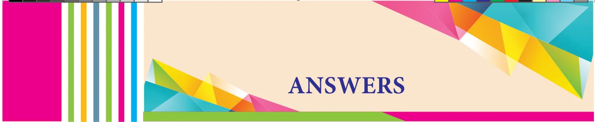
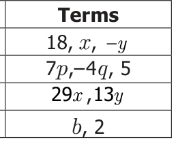
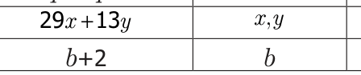
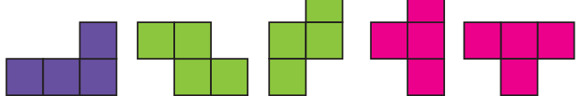
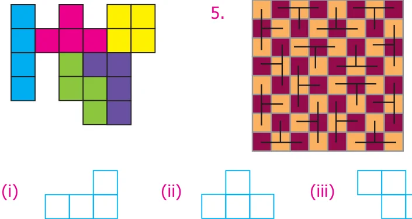
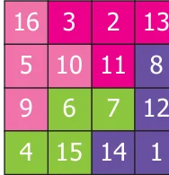
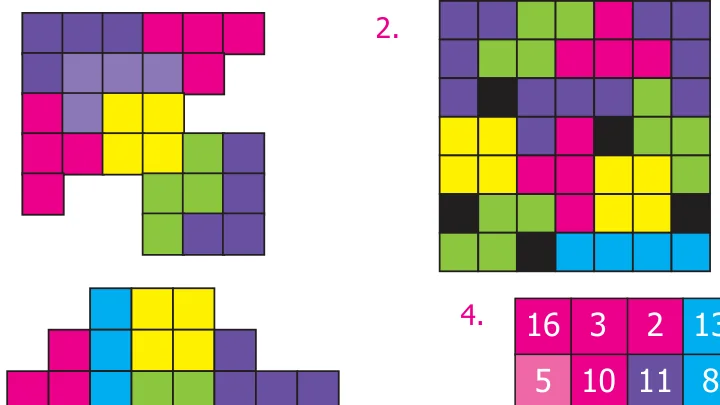
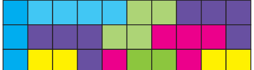
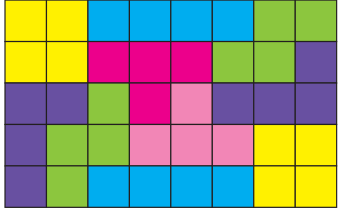
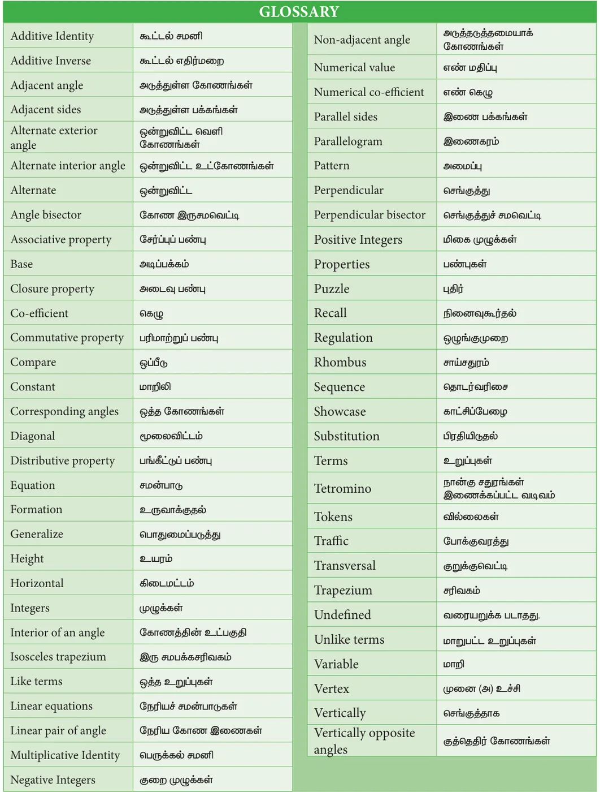

Number System Exercise 1.1
- (i) 90 (ii) \(- 95\) (iii) \(- 104\) (iv) 22 (v)140
- \(- 100\) (vii) 50 (viii) \(- 171\) (ix) \(- 3 (x)15\), \(- 42\), \(- 23\)
- (i) False (ii) False (iii) True
- (i) \(- 4\) (ii) \(- 8\) (iii) \(- 110\) (iv) \(- 52 (v)7\) (vi) \(- 63\) (vii) \(- 288\)
- \(- 38 5\). Team \(A =\) Team B (yes, it can be added in any order)
- Both are equal. Associative property under Addition
- 0 +2, \(1+1 = 2\) , \(- +1 3\) , \(- +2 4\) , \(- +3 5\) (any pair)
Objective type questions
- (iv) 10 pm 9. (i) \(- 9+( - 5)+6 10.(ii) - 3 11\). (iii) 0 12. (i) 20
Exercise 1.2
- (i) \(- 44\) (ii) 30 (iii) \(- 30\)
- (i) False (ii) True (iii) False
- (i) 1 (ii) 17 (iii) 99 (iv) \(- 300\)
- 3 5. 5th floor (above the ground floor) 6. \(100 ^{\circ} F\)
- \(- 2 8\). Wrong, - 35(correct answer)
Objective type questions
- (iii) 13 10. (ii) 0
Exercise 1.3
- (i) 1 (ii) \(- 2\) (iii) \(- 5\) (iv) 5 (v) 0
- (i) False (ii) True (iii) False 3. (i) '+' (ii) ' - '
- (i) \(- 770\) (ii) 1080 (iii) 3024 (iv) 0 (v) 10,000
- (i) Not equal (ii) Not equal
- Equal ; distributive property of multiplication over addition
- Decrease of 12inches
- \((- \times 5 10),( - 10 \times 5),(2 \times - 25),( - 2) \times 25\), ,\((- 1) \times 50\) ,\((- 50) \times 1\)
Objective type questions
- (iv) \((- 6) \times (+5) 9\). (iii) distributive 10. (iv) \(- 11 11\). (i) 108
Exercise 1.4
- (i) \(- 1\) (ii) \(- 5\) (iii) \(- 36\) (iv) 1
- (i) False (ii) False
- (i) \(- 15\) (ii) 5 (iii) \(- 5\) (iv) \(- 1\)
- 9 5. dropped 3˚c per hour 6. 53 seconds
- 160 calories lost per day
- 168 9. 5 10. \(- 40\)
Objective type questions
- (iv) \(12 \div 5 12\). (iii) \(16 \div (- 4) 13\). (ii) \(- 20 14\). (iv) division
Exercise 1.5
- 14˚c 2. (i) \(- 2\) (ii) 0 (iii) \(- 3\) (iv) \(- 4\) (v) 1
- (i) \(- 2 k\) (ii) \(318 ^{\circ} k\) (iii) \(- 127 k\) (iv) \(0 ^{\circ} k\)
- (i) ₹1175 (ii) ₹675 (iii) ₹325 (iv) ₹414 (v) ₹114
- (i) 7 days (ii) 15,750 characters (iii) ₹8750
- 5 days (v) ₹3,500 6. 12 7. Loss of ₹10
- decrease of 18 inches 9. yes; 80 years
Exercise 1.6
- 11 2. \(- 40 3\). \(- 1,81,805 4\). \(- 445 5\). \(- 17,999\)
- 31,500 7. \(- 9 8\). \((- 3\), \(- 5)\), (3,5)
- (i) Equal (ii) Not equal (iii) Not equal (iv) Equal
- ₹ 6,800 11. The item x will be costlier is 2020
- Match the following
- d, 2. a, 3. e, 4. c, 5. b
Challenge Problem
- (i) False (ii) False (iii) True (iv) True (v) False
- \(- 21 15\). \(- 5\)
- \((- 1)+1+( - 2)+2+( - 3)+ 3+( - 4)+ 4 +( - 5)+ 5 = 0\)
(The answer is not unique. You can take any single digit with its Additive inverse)
- 2 18. (i) \(- 4\) (ii) \(- 11 19\). 3000 litres of water
- 5 jumps 21. ₹ 24 22. 850 feet below the sea level
- \(x = 0\), \(y = - 4\), \(z = - 7\)
Measurement Exercise 2.1
- (i) area \(= 33\) sq.cm perimeter \(= 30cm\) (ii) area \(= 70\) sq.cm perimeter \(= 40\) cm
- (i) 90 sq.cm (ii) 7 m (iii) 13 mm 3. 35 cm 4. 54 sq.cm 5. ₹ 4620/-
Objective type questions
- (iv) 22 cm 7. (i) 70 sq.cm 8. (iii) 13 cm
- (ii) Remains the same 10. (ii) 192 sq.cm
Exercise 2.2
- (i) 64 sq.cm (ii) 165 sq.cm 2. 126 sq.cm
- (i) 152 sq.cm (ii) 36 m (iii) 30 mm 4. 25 cm 5. ₹ 280
Objective type questions
- (iii) 12 sq.cm 7. (ii) 32 sq.cm 8. (ii) 8 cm 9. (iv) 4 m 10. (iii) \(90 ^{\circ}\)
Exercise 2.3
- (i) 160 sq.m (ii) 24 cm (iii) 18 m (iv) 30 cm
- 330 sq.cm 3. 38 cm 4. 24 cm 5. 23 cm and 17 cm
- ₹ 870 7. ₹ 697.50
Objective type questions
- (i) 45 sq.cm 9. (iv) 28 cm 10. (iii) isosceles trapezium
Exercise 2.4
- 144 sq.cm 2. 11 hm 3. 128 m 4. \(h = 13\) cm \(b = 52\) cm
- \(d_{1} = 48\) cm \(d_{2} = 24cm 6\). ₹ 1,57,950
Challenge Problems
- 45 cm; 25 cm 8. 4725 sq.cm 9. 192 sq.cm 10. \(DF = 30cm BE = 42cm\)
- 54 sq.cm 12. 169 sq.cm; ₹ 2535
- 12 cm 14. ₹ 5250 15. 324 sq.m
ALGEBRA EXERCISE-3.1
- - (iii) unlike three (v) \(- 1\)
- False True \(- 3,12\), 1,121, \(- 1,9,2\).
- \(\frac{(i)\) True}{S.No.} Variable \(\frac{False3.}{Constant}\)


- - terms - terms - terms
, \(- x\), - , , - , ,
- \(- 5\)
Objective type questions
- (i) 3(x+y) 8. (ii) \(- 7 9\). (iv) \(- 4x,7x 10\). (ii) 13
EXERCISE-3.2
- (i) \(- 5b\) (ii) \(- 8m\) (iii) 37xyz
- (i) False (ii) False (iii) True
- (i) 11x (ii) 12mn (iii) 4y
- (i) 8k (ii) 10q (iii) 10xyz
- (i) \(28p + 6q\) (ii) 3a +15b +16c (iii) \(6mn - 4t\)
- 6u (v) 8xyz \(- 8xy\)
- (i) \(14x - 7y - 38\) (ii) \(- 2p - 2q +2\) (iii) \(2m - 8n\) (iv) \(- 7y + 5z\)
- (i) \(- 10x - 11y +12z\) (ii) \(2p + 6\) (iii) \(3m + 3n +15\)
Objective type questions
- (iii) 2mn 9. (iii) \(- 2a 10\). (i) Like terms
EXERCISE-3.3
- (i) equation (ii) 15 (iii) 6x
- (i) False (ii) True (iii) True
- (i) \(x = 3\) (ii) \(p = 10\) (iii) \(x = 15\) (iv) \(m = 30\) (v) \(x = 10\)
- 2x+2y 5. \(x = 12 6\). 99 and 101 7. \(x = 45km\)
Objective type questions
- (iii) 3n 9. (i) 2 10. (ii) \(- 1\)
EXERCISE-3.4
- 6ab +16; \(- 6ab - 16 2\). \(4x + 3y 3\). \(x = 13 4\). \(3ab - 7b + 3c 5\). \(x = 8\)
Challenge Problems
- \(12x + 6y - 18 7\). \(- 4a - b - 4c 8\). \(5m + n - 6 9\). lb \(- 2(l +\) b) \(= 20\)
- \(3a + \frac{417}{35} b + c\)
Direct and Inverse Proportion
Exercise 4.1
- (i) ₹ 84 (ii) 21kg. (iii) 10 litres (iv) ₹ 210 (v) 360
- (i) True (ii) True (iii) False (iv) True (v) False
- ₹ 80 4. 42 5. 180 6. 40 m 7. 1107
- ₹ 250 9. 5 kg. 10. ₹ 30,000 11. Kamala 12. 5 litres
Objective Type Questions
- (iii) ₹ 360 14. (ii) 7 15. (iv) 147 16. (ii) 10 17. (i) 9
Exercise 4.2
- (i) 32 (ii) 80 2. 1 hour 48 minutes
- 36 days 4. 20 days 5. 15 days 6. 100 gm
- 18 8. 4 km/hr 9. 24
Objective Type Questions
- (iii) 6 11. (ii) 8
Exercise 4.3
- (i) 15 kg. (ii) ₹ 36 2. (i) Direct proportion (ii) \(k = 5\) (iii) \(C = 50\)
- 90 months 4. 12 minutes 5. ₹ 140 6. 3 7. 300 litres 8. 10 days
Challenge Problems
- ₹ 1155 10. 35 minutes 11. 81 12. 6 days 13. 10 days 14. 5 days
GEOMETRY Exercise 5.1
- The pairs of adjacent angle are \(\angle ABG\) and \(\angle GBC\) , \(\angle BCF\) and \(\angle FCE\) , \(\angle FCE\) and
\(\angle ECD\), \(\angle ACF\) and \(\angle FCE\) , \(\angle ACF\) and \(\angle FCD\).
- \(65 ^{\circ} 3\). \(86 ^{\circ} 4\). (i) \(108 ^{\circ}\) (ii) \(46 ^{\circ}\) (iii) \(30 ^{\circ}\)
- The other angle is also a right angle. 6. \(30 ^{\circ}\) , \(120 ^{\circ}\) , \(210 ^{\circ} 7\). \(63 ^{\circ}\)
- Adjacent angles: \(\angle PQU\) and \(\angle PQT\) , \(\angle PQT\) and \(\angle TQS\), \(\angle TQS\) and \(\angle SQR\) ,
\(\angle SQR\) and \(\angle RQU\), \(\angle RQU\) and \(\angle PQU\) (all possible answers). Vertically opposite angles: \(\angle PQU\) and \(\angle TQR\), \(\angle PQT\) and \(\angle UQR\) .
- \(120 ^{\circ} 10\). \(105 ^{\circ} 11\). \(45 ^{\circ}\) , \(135 ^{\circ} 12\). (i) \(125 ^{\circ}\) (ii) \(55 ^{\circ}\)
Objective type questions
- (iii) one common arm, one common vertex, no common interior
- (iii) linear pair 15. (iv) equal in measure
- (i) \(360 ^{\circ} 17\). (ii) \(80 ^{\circ}\)
Exercise 5.2
- (i) The angles are exterior angles on the same side of the transversal
- The angles are alternate exterior angles
- The angles are corresponding angles
- The angles are interior angles on the same side of the transversal
- The angles are alternate interior angles
- The angles are corresponding angles
- (i) \(35 ^{\circ}\) (ii) \(65 ^{\circ}\) (iii) \(145 ^{\circ}\) (iv) \(135 ^{\circ} (v)90 ^{\circ}\)
- (i) \(28 ^{\circ}\) (ii) \(58 ^{\circ}\) (iii) \(123 ^{\circ}\) (iv) \(108 ^{\circ}\)
- (i) \(149 ^{\circ}\) (ii) \(45 ^{\circ}\) (iii) \(101 ^{\circ}\) (iv) \(158 ^{\circ}\)
- (i) \(42 ^{\circ}\) (ii) \(8 ^{\circ}\) (iii) \(2 ^{\circ}\) (iv) \(15 ^{\circ}\)
- (i) \(55 ^{\circ}\) (ii) \(35 ^{\circ}\)
- (i) No. Since, interior angles on the same side of the transversal are supplementary.
- No. Since Corresponding angles are equal.
- Minimum number of angles is 1. Using the concept of linear pair of angles, we can
find one more angle and by the concepts of corresponding angles and alternate angles (interior and exterior) we could find all other angles.
Objective type questions
- (ii) transversal 11. (i) alternate exterior angle
- (iv) interior angles on the same side of the transversal are supplementary
- (ii) \(44 ^{\circ}\)
Exercise 5.6
- \(18 ^{\circ} 2\). \(41 ^{\circ} 3\). \(35 ^{\circ}\) , \(115 ^{\circ}\) , \(25 ^{\circ} 4\). \(55 ^{\circ}\) , \(125 ^{\circ}\)
- (i) Yes. They have a common vertex, a common arm and their interiors do not
overlap.
- No. They have overlapping interiors.
- No. Since \(\angle BOC\) is a straight angle, their sum will exceed \(180 ^{\circ}\) .
- Yes. They are linear pair.
- No. They are not formed by intersecting lines
- \(52 ^{\circ} 7\). \(30 ^{\circ}\) , \(80 ^{\circ} 8\). \(75 ^{\circ}\) , \(42 ^{\circ}\) , \(42 ^{\circ}\)
- \(90 ^{\circ} 10\). \(127 ^{\circ}\)
Challenge Problems
- \(26 ^{\circ} 12\). \(38 ^{\circ} 13\). \(40 ^{\circ} ,25 ^{\circ} 14\). \(44 ^{\circ}\)
- \(72 ^{\circ} ,57 ^{\circ} ,51 ^{\circ} 16\). \(76 ^{\circ} ,29 ^{\circ} 17\). \(7 ^{\circ} 18\). \(48 ^{\circ} ,60 ^{\circ} ,108 ^{\circ}\)
- \(21 ^{\circ} 20\). \(214 ^{\circ}\)
Information Processing
Exercise 6.1

- 4 2. 3.
4.

6.

7.
(more possible ways)
Exercise 6.2
1.

3.
- Mandapam \(\to\) Krusadai Island \(\to\) Vivekanandar Memorial Hall
Challenge Problems
6.

(more possible ways)
7.

(more possible ways)
8 (i) route1 \(A \to G \to D\) (ii) 320 m route2 \(A \to B \to D\) route3 \(A \to B \to C \to D\) route4 \(A \to G \to F \to E \to D\)
- route1 \(B \to A \to G \to F\) route2 \(B \to D \to E \to F\)
\(250 + 100 + 150 = 600m 100 + 120 + 300 = 520m\)
route3 \(B \to D \to G \to F\) route4 \(B \to C \to D \to E \to F\)
\(100 + 200 + 150 = 450m 120 + 200 + 120 + 300 = 740m\)
Route 3 is the shortest route.

Standard Seven - Term \(- I\), Volume \(- 2\), Mathematics Text Book Development Team
Reviewer Content Readers
- Dr. R. Ramanujam, • Dr.P.Jeyaraman,
Professor, Asst Professor, L.N. Govt Arts College, Institute of Mathematical Sciences, Taramani, Chennai. Ponneri \(- 601 204\)
Domain Expert • Dr. K. Kavitha
- Dr. C. Annal Deva Priyadarshini, Bharathi Women's college, Chennai
Asst. Professor, Department of Mathematics, Madras Christian College, Chennai
Content Reader's Coordinator Academic Coordinator
- S. Vijayalakshmi,
- B.Tamilselvi, B.T. Asst., GHSS,
Deputy Director, Koovathur, Kanchipuram Dt. SCERT, Chennai .
Group in Charge ICT Coordinator
- Dr. V. Ramaprabha, • D. Vasuraj
Senior Lecturer,DIET, Tirur, Tiruvallur Dt. PGT & HOD, Dept. of Maths,KRM Public School, Chennai.
Coordinator Qr Code Management Team
- D. Joshua Edison • J.F. Paul Edwin Roy, B.T. Asst,
Lecturer, DIET, PUMS -Rakkipatty, Veerapandi, Salem. Kaliyampoondi, Kanchipuram Dt. • S. Albert Valavan Babu, B.T. Asst, Content Writers GHS, Perumal Kovil, Paramakudi, Ramanathapuram
- G.P. Senthilkumar, • M. SARAVANAN, B.T. Asst,
B.T.Asst, GGHSS, Puthupalayam, Vazhapadi, Salem.
GHS, Eraivankadu, Art and Design Team
Vellore District.
- M.J. Shanthi,
B.T.Asst, PUMS, • Joy Graphics, Chintadripet, Chennai \(- 02\) Kannankurichi, Salem Dt. • Raj Graphics, Theni Dist.
- M. Palaniyappan,
B.T.Asst, Typist Sathappa GHSS, Nerkuppai, • R. Yogamalini, Sivagangai Dt.
- A.K.T. Santhamoorthy Artist
B.T.Asst, • Prabu Raj D.T.M
GHSS, Kolakkudi, GHS, Manimangalam, Kanchipuram Dt. Tiruvannamalai Dt.
- P. Malarvizhi
B.T.Asst, Chennai High School, • Prasanth C Pattalam, Chennai
- Arun Kamaraj P
- M. Selvi • Jerald Wilson
B.T.Asst, J.G.G.GHSS, Thiruvottiyur, • Stephen Chennai. This book has been printed on 80 GSM Elegant Maplitho paper Printed by offset at :